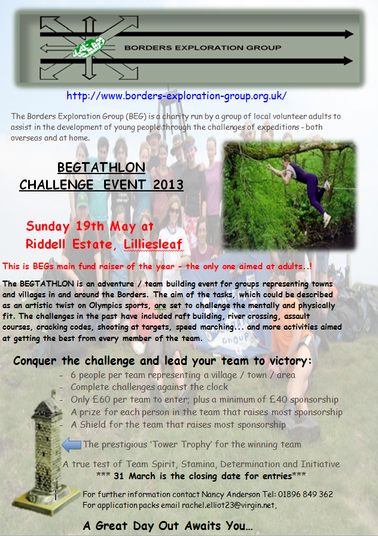

Borders Exploration Group
Patron: Sir Michael Strang Steel Scottish Charity No:SC034336
Local Events
Tower Trophy 2013

This year's Tower Trophy event has been confirmed for Sunday the 19th of May.
The details so far are as follows:I would be grateful if people could let me know if they are able and willing to help on the day with this event (if you have previously let Nancy know you can help would you please drop me an email anyway, just so I can put all the offers of help together.)
- 6 people (any sex) per team representing a town/ village/area
- £60 Deposit on application plus a further £40 minimum sponsorship per team (Prize for most sponsorship plus shield) Tower Trophy for the winning Team.
- Closing date for entries end of March.
Also, if you know potential teams it would be great if you could let me know about the names for these.
Any questions please do get in touch.
Rachel Elliot

We also undertake several different types of Local Events based in the UK. Some Events are "Challenges" for Individuals or Groups; Groups can be from Schools, Young People's Organisations or Businesses. We try to ensure that as well as being "challenging", their will be a need for a mix of physical and mental skills as well as being great fun. This way, hopefully anyone will be able to take part.
Local Events include:-
- Survival courses
- Leadership Training
- Activity weekends
- Activity Weeks
- School Challenge days
- Business Challenge Days
- Fund Raising Events
- European Expeditions
- Lectures
Where possible, a UK-based trip will be undertaken in the years between the International Expeditions.
So far, these "Local" Expeditions have gone to:-
- The Isle of Skye
- The West Coast on a converted fishing trawler.
- Isle of Rum
Lectures are organised by Borders Exploration Group on subjects such as winter
safety and mountain first aid.
Leaders are also supported financially to undertake training for outdoor activities and other expedition courses.
Team Challenge Days
The Kirsty MacAskill Trophy is competed for by school teams from the 9 Secondary Schools in the Scottish Borders. As with all BEG events, the Kirsty MacAskill challenge is a mix of physically and mentally challenging events which also tests teamwork, communication and cooperation. The trophy is named after Kirsty MacAskill, deputy leader of the 1995 expedition to Ecuador. Kirsty was tragically killed in a road accident less than a month after returning home.
In Memory of Kirsty J. MacAskill
April 1966 - August 1995